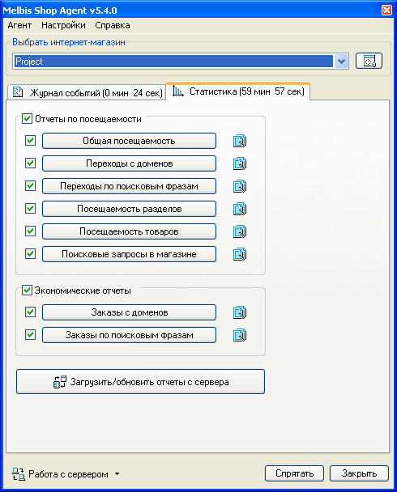

Статистические возможности Melbis Shop Agent позволяют отображать данные с сервера за период, указанный в общих настройках магазина ("Время хранения данных, дней").
Поскольку некоторые отчеты при высокой посещаемости магазина могут имет значительный размер, то для каждого отчета имеется опция, обозначающая, надо или нет загружать данные для соответствующего отчета с сервера. Также есть возможность загрузить отчеты по частям, если сервер не успевает за один раз подготовить все данные для отчетов. Все отчеты удаляются перед запуском программы Melbis Agent. Рядом с каждой кнопкой вызова соответствующего отчета имеется кнопка редактирования макета этого отчета.
Статистические отчеты обновляются с периодичностью, заданной в настройках. Для досрочного обновления/загрузки отчетов необходимо нажать кнопку "Загрузить/обновить отчеты с сервера".
